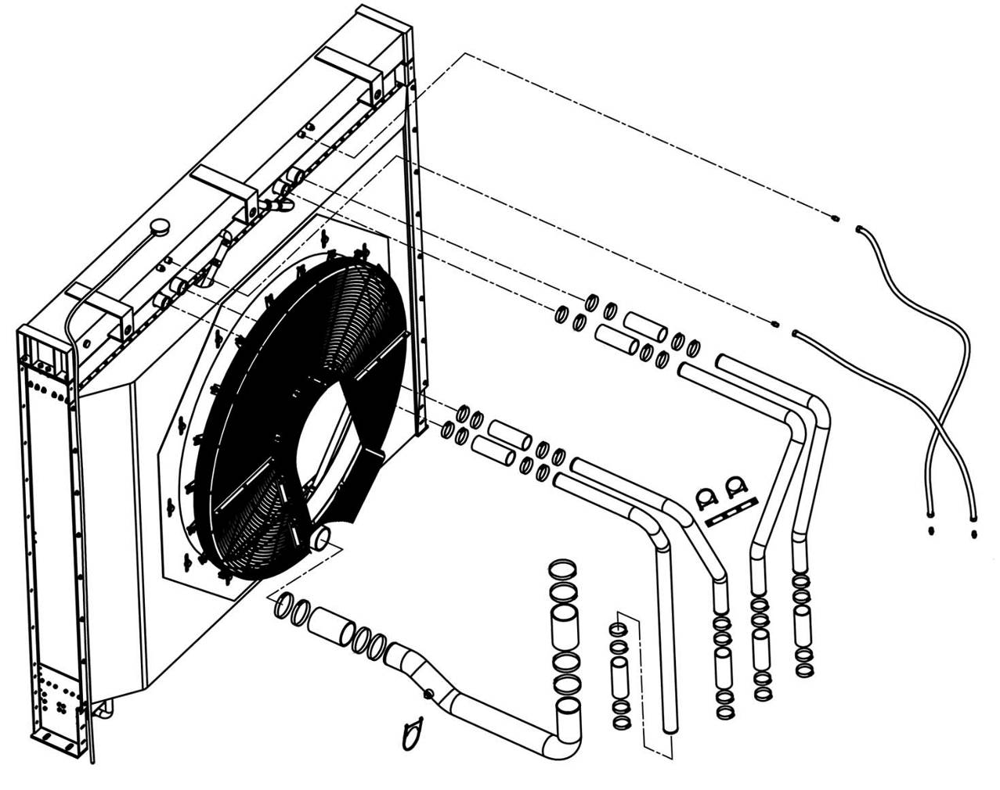

Система охлаждения
Управление
Двигатель вырабатывает тепло, сжигая топливо в цилиндре, и только часть этого тепла преобразуется в механическую энергию. Тепло, которое не может быть преобразовано в механическую энергию, должно рассеиваться контролируемым образом для защиты металлических деталей двигателя от повреждений. Для того, чтобы двигатель работал с наивысшей эффективностью, его температура должна поддерживаться в определенном диапазоне, а функция системы охлаждения заключается в этом.
Чтобы эффективно передавать тепло, вырабатываемое двигателем, в охлаждающую жидкость, а затем из охлаждающей жидкости в радиатор, внутренняя поверхность охлаждающего канала двигателя и радиатора должна быть свободной от отложений, которые образованы из - за накипи, коррозии, масла и химического осаждения. Эти вещества будут прилипать на металлической поверхности и образовать изолирующий слой, что значительно снижает эффективность теплопередачи.
Примечание: воздушные пузырьки в охлаждающей жидкости также снижают эффективность рассеивания тепла.
Как правило, система охлаждения работает под давлением, создаваемым повышением температуры и расширением охлаждающей жидкости от холодной до рабочей температуры. Если крышка водяного бака открывается, когда система находится под давлением (например, проверять уровень охлаждающей жидкости), система не будет полностью восстанавливать первоначальное давление, кроме случая, когда система охладится до температуры окружающей среды. Эта ситуация не способствует охлаждению двигателя.
Техническое обслуживание
Периодическое техническое обслуживание включает следующие виды работ:
ПРЕДУПРЕЖДЕНИЕ
Будьте особенно осторожны при снятии крышки радиатора и других компонентов системы охлаждения. После того, как двигатель остынет и затем медленно откроется, внезапное высвобождение давления горячей системы охлаждения вызовет разбрызг охлаждающей жидкости, вызвав ожоги людей и потерю охлаждающей жидкости.1. Наблюдать уровень охлаждающей жидкости от оконной гайки на расширительном бачке. Если уровень жидкости ниже оконной гайки, добавить назначенную охлаждающую жидкость перед запуском карьерного самосвала. Или, когда горит сигнальная лампа низкого уровня на приборной панели кабины, необходимо также добавить назначенную охлаждающую жидкость. Добавление охлаждающей жидкости должно выполняться в следующем порядке:
a. Убедиться, что температура охлаждающей жидкости ниже 45℃
b. Покрыть тканью колпачок давления на расширительном бачке, надавите на колпачок вниз, медленно вращаясь против часовой стрелки, и легко нажмите на колпачок давления, чтобы сбросить давление в системе. Когда давление в системе полностью выброшено, снимите колпачок давления.
c. Проверить уплотнение крышки радиатора и при необходимости замените.
d. Добавить охлаждающую жидкость до середины оконной гайки.
Примечание: для приготовления охлаждающей жидкости см. руководство по техническому обслуживанию и ремонту производителя двигателя, использовать антифриз и добавки, следуйте рекомендациям по техническому обслуживанию.
e. Установить колпачок давления и затяните его.
2. Проверить состояние охлаждающей жидкости. Требования к тестам см. в руководстве по техническому обслуживанию и ремонту производителя двигателя(Cummins). Если необходимо заменить охлаждающую жидкость, выполните следующие действия:
a. Открыть радиатор и сливной клапан на двигателе, как описано в руководстве изготовителя двигателя.
b. Снять колпачок давления, чтобы ускорить процесс слива.
c. Промыть систему охлаждения, следуя рекомендациям производителя двигателя и радиатора.
ВНИМАНИЕ
Сначала выполняется химическая очистка. Когда химическая очистка не является удовлетворительной, выполняется обратная очистка. Сила потока жидкости обратной промывки противоположен нормальному направлению потока, может ослабить и удалить накипь и грязь, осажденные в систему, но это также может привести к блокировкам в системе позже.Примечание: если нет промывочного пистолета, использовать водопровод или воздуховод.
d. Установить шланг на верхнюю часть радиатора, чтобы направлять воду в нужное место или хранить в контейнере.
e. Полить радиатор промывочным пистолетом.
f. Промыть поочередно водой и продувайте воздухом до тех пор, пока вода, текущая с верхней части, не станет чистой.
g. Снять, очистить и проверить крышку радиатора, вся грязь должна быть удалена.
| Вопросы | Возможная причина | Метод устранения |
| Слишком высокая температура охлаждения двигателя | Уровень жидкости в охлаждающей жидкости низкий. | Пополнение хладагента на месте, проверка на герметичность |
| Блокировка сердечника радиатора | Удаление препятствия и Очистить радиатор | |
| Сбой вентилятора | Ремонт или замена | |
| Насос работает неправильно | Ремонт или замена | |
| Термостат работает неправильно | Замена термостата | |
| Забивание внутри элемента | Промывка всей системы охлаждения по требованиям | |
| Муфта вентилятора работает неправильно | Ремонт или замена | |
| Воздух или выхлопной газ в охлаждающей жидкости | Определение входа газа, устранение утечки | |
| Сбой индикатора температуры | Регулировка или замена | |
| Повреждение шланга между радиатором и двигателем | Холодное состояние или отопление карьерного самосвала, проверка состояния шланга во время работы двигателя, при необходимости заменить | |
| Двигатель не работает должным образом | Проверить двигатель, включая форсунку и датчик нормального времени, настройка или ремонт по мере необходимости | |
| Двигатель или радиатор слишком загрязнены | Удалите пыль (пыль снижает эффективность рассеивания тепла) | |
| Размер и характеристики радиатора не соответствует | Проверить характеристики радиатора и обратитесь к производителю. | |
| Слишком низкая температура охлаждения двигателя | Термостат работает неправильно (не закрыт или с утечкой) | Замена термостата |
| Отсутствует колпачок давления | Проверить колпачок давления и при необходимости замените. | |
| Низкий уровень жидкости охлаждения | Проверка внешней утечки 1. Зажим для труб ослаблен или стальная труба и шланг не соответствуют спецификации. 2. Радиатор 3. Уплотнение 4. Разгрузочный клапан 5. Уплотнительное кольцо (насос, термостат) 6. Уплотнения двигателя и воздушного компрессора 7. Аксессуары для двигателей | Ремонт или замена |
| Внутренняя проверка утечки 1. Двигатель или воздушный компрессор (к цилиндру) 2. Чехол форсунки 3. Просачивание головки цилиндра 4. Аксессуары для двигателей | Ремонт или замена | |
| Проверка перелива 1. Охлаждающая жидкость слишком заполнена 2. Неисправность колпака давления 3. Элемент радиатора засорен 4. Система не чистая 5. Газ поступает в систему для слива охлаждающей жидкости 6. Чрезмерная температура всасываемого воздуха 7. Направление трубопровода неправильное | Ремонт или замена |
Силовая система- система охлаждения
040-0050
Силовая система- система охлаждения
040-0050
3
Силовая система- система охлаждения
040-0050
Силовая система- система охлаждения
040-0050
2
Дополнения - Масса компонентов
200-0090
Силовая система- система охлаждения
040-0050
4
5
Дополнения - Масса компонентов
200-0090
Спецификация 1Водопровод радиатора5Водопровод радиатора9Зажим13Трубное соединение2Водопровод радиатора6Пластина10Шланг14Шланг в сборе3Водопровод радиатора7U-образный зажим11Зажим15Соединение4Водопровод радиатора8Шланг12Зажим25 Рис. 1. Монтаж трубопроводов системы охлаждения
13
4
7
1
9
8
3
5
9
9
8
2
13
14
14
15
15
11
10
11
12
11
10
11
6
9
Иллюстрации
